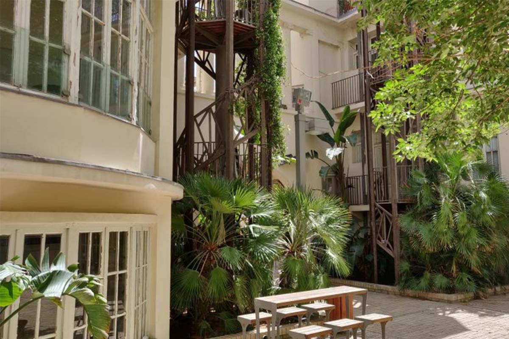

1 / 6

3 / 6

4 / 6
5 / 6
6 / 6
לחובבי האדריכלות, תל אביב היא חגיגה לעיניים! יש בה שילוב יפהפה בין גורדי שחקים מנצנצים, בניינים ישנים, בניינים ישנים בסגנון הבינלאומי וכאלו שעברו שימוש, בסגנונות אקלקטיים, את כל אלו תוכלו לראות יחד בלב תל אביב, שזורים אחד בשני, וכל שתצטרכו לעשות הוא לפתוח עיניים ולהתרשם.
אז למה לכם שווה להגיע לפה? כי כך תראו איך בלב אזור עמוס ורועש שוכנת ריאה ירוקה ושקטה, שתוכננה בשיתוף התושבים (!), ותוכלו ליהנות ממרחבי דשא נעימים, מתקנים לילדים, בריכה עם ברווזים, פרחים ודגי זהב ואפילו לגלות פה גינה קהילתית. ובאמת שהשלם הזה גדול מסכום חלקיו.
בין הרחובות יהודה הלוי, עמרם גאון, סעדיה גאון, וילסון ולינקולן, נמצא גן מקסים, שנראה כמו לא קשור לאזור התעשייה שבו הוא ממוקם: גן קריית ספר. אך הסיפור יכול היה להיות שונה לחלוטין, אם תושבי השכונה לא היו יוצאים במאבק כנגד הקמת פרוייקט נדל”ן, ומנצחים.
אם תגיעו להצטלבות בין רחוב מזא”ה לנחמני תגלו גם בית פגודה יחיד ומיוחד, שנבנה בשנת 1924 (כמובן שעבר תהליך שימור מאז), והכיל את המעלית הראשונה בעיר!
עוד ברחוב מזא”ה, שנזכר לעיל, תמצאו את מתחם “רובע לב העיר”, שבהחלט מגיעה לו פסקה נפרדת. תדעו שהגעתם כשתיתקלו בחזית יפהפיה ודו קומתית עם קשתות ועמודים. היא תתפוס לכם את העין, אל חשש.
בין העמודים תראו את בית הקפה “תולעת ספרים” – מקום חמוד בפני עצמו, אך אם תעלו על המדרגות שמובילות אל החצר – תגלו את האטרקציה המרכזית שלנו: כיכר קטנה ונעימה, מוקפת בבנייני מגורים – אי של שקט ממש במרכז תל אביב.
זהו מקום מושלם לשבת בו ולקרוא ספר, לשתות קפה בצד האחורי של “תולעת ספרים” או פשוט להתבונן במבנים המקסימים, שעברו כמה גלגולים, עד שהפכו למעין מיזם נדל”ן יוקרתי בתחילת המאה ה-21.
אם אתם ביום קשה של לימודים, או סתם מחפשים תצפית לא רשמית לדייט רומנטי – זה המקום. בכביש שתוחם את אוניברסיטת תל אביב מכיוון מזרח, הקרוי על שם ד"ר ג'ורג' ווייז, ישנם כמה ספסלים, בקצה הגבעה, שמשקיפים לנוף הפתוח של גוש דן. אולי אחד המקומות היחידים להרגיש קצת בריזה בקיץ המחניק.
פארק הירקון אולי ידוע בעיקר כמוקד משיכה למשפחות וימי הולדת רועשים, אבל את האי הזה אי אפשר להשמיט מהרשימה. בלב האגם הגדול (כן, זה שיוצאות ממנו סירות הפדלים) שוכן אי קטן, המכונה בפי כל "אי הפיראטים". כדי להגיע אליו תצטרכו להקיף את האגם, לעבור בגשר המוביל לאי ולטפס מעל השער הנעול. אנחנו מבטיחים שזה שווה את המאמץ.
בקצה המושבה האמריקאית (שהיא כולה קסם אחד גדול) ישנו מתחם בתים נסתר מן העין בין הרחובות נחמה לבר הופמן. כשנכנסים ללב המתחם מעורר הקנאה, קל מאוד לשכוח שהרחובות אילת ושלמה הסואנים נמצאים במרחק מטר וחצי משם. מראה השכונה אולי שונה ביחס לשאר העיר, אך הוא גם מאפיין אותה יותר מכל – הרי אין דבר יותר תל אביבי ממעברים חדים.